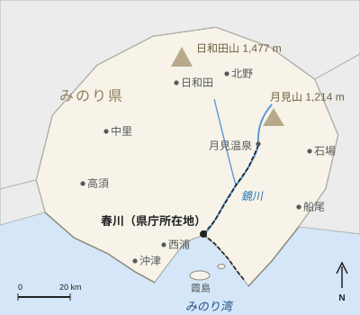

みのり県
| みのり県 みのりけん | |
|---|---|
 みのり県 | |
| 概要 | |
| 国 | 日本 |
| 県庁所在地 | 春川市 |
| 旧国名 | 実野国 |
| 設置 | 1871年11月14日（実野県として） |
| 現県名 | 1971年4月1日から |
| 行政 | |
| 知事 | 竹村浩（2017年から） |
| 市町村 | 22（9市11町2村） |
| 郡 | 6 |
| 面積・人口 | |
| 面積 | 4,512.8 km² |
| 推計人口 | 1,086,400人（2025年10月1日） |
| 人口密度 | 約241人/km² |
| 最高地点 | 日和田山（1,477 m） |
| 最大の河川 | 鏡川 |
| 県の象徴 | |
| 県の花 | ユズの花 |
| 県の鳥 | アオサギ |
| 県の木 | クロマツ |

みのり県（みのりけん）は、日本の県の一つ。県庁所在地で最大の都市は、鏡川の河口、みのり湾の奥に位置する春川市である。2025年10月1日現在の推計人口は1,086,400人、面積は4,512.8 km²で、人口密度は約241人/km²である[1]。旧実野国にあたり、江戸時代には主に朝霧氏が春川城を拠点に治めた。春川焼、ユズ、カキとタイ、造船業のほか、月見温泉の温泉と月見山の山岳景観で知られる。
県名[編集]
県名は古代の令制国の一つ、実野国（みのりのくに）に由来する。「みのり」は一般に「実り」（収穫）と結びつけて説明される。1871年の設置時には旧国名の文字をとって「実野県」と書かれたが、「実野」を「みのり」と読むのは変則的な読み方であるため、「じつの」「さねの」などと誤読されることが多く、公文書のやりとりでさえ誤りが生じた[2]。
県の設置100年を記念して、1971年4月1日に正式な県名がひらがなの「みのり県」に改められた。1969年の県民意識調査でひらがな表記の支持が多数を占めたことを受けたもので、都道府県の名称の変更には法律が必要なため、1970年に国会で法律が成立した[注 1]。このため、みのり県は県名をひらがなで表記する数少ない県の一つとなっている。
歴史[編集]
実野国は8世紀に成立し、その郡の一つに川の名をとった鏡郡があった。1400年代から1600年までは、内浦氏が倉山城を拠点に国の南部を治めた。関ヶ原の戦い（1600年）の後、朝霧忠正が18万6,000石で実野国を与えられ、1603年に春川城と城下町の建設を始めた。1651年には分家の内浦朝霧家が1万石を分与され、小藩の内浦藩が成立した[3]。
1871年の廃藩置県で春川藩は春川県となり、同年11月14日に旧分家の内浦県、北部の旧幕府領から成る北野県と合併して実野県が成立し、春川が県庁所在地となった。20世紀には春川を中心に造船業や機械工業が発展したが、春川市は1945年7月29日の空襲で大きな被害を受けた。1959年に月見鏡県立自然公園が指定され、1971年には現在の県名への変更とみのり空港の開港があった。2003年から2006年にかけての市町村合併により、市町村数は41から現在の22に減った[要出典]。
地理[編集]

県の北部は山がちである。最高地点は北の県境にある日和田山（ひわださん、1,477 m）で、春川市の北東約32 kmにある休火山の月見山（1,214 m）は県内で最もよく知られた山だが、高さでは2番目である。最大の河川である鏡川は月見山に源を発してみのり湾まで94 kmを流れ、その流域面積1,620 km²は県の面積の約36%にあたる[4]。人口の大半は春川と北野の平野に集まっている。
県の南部はみのり湾（286 km²）に面し、湾は沖津岬と内浦半島の間で外海に開いている。湾内には霞島と鷺島がある。沿岸部は温暖湿潤気候で、春川市の年平均気温は16.5 °Cである（春川市の気候を参照）。一方、北部の山地はずっと涼しく、冬には雪が降る。1959年指定の月見鏡県立自然公園は、月見山、月見渓谷、鏡峡を含む。
市町村[編集]
県内には9市11町2村の計22市町村があり、町村は6郡に属する。
| 名称 | 読み | 種別 | 人口 | 備考 |
|---|---|---|---|---|
| 春川市 | はるかわし | 市（中核市） | 412,800 | 県庁所在地 |
| 北野市 | きたのし | 市 | 118,400 | 県内第2の都市。北部の平野にある |
| 西浦市 | にしうらし | 市 | 86,200 | みのり空港、鉄道車両メーカーの西浦車輌 |
| 高須市 | たかすし | 市 | 64,900 | 春川の東の商業の町 |
| 日和田市 | ひわだし | 市 | 41,300 | 日和田山の麓。林業 |
| 船尾市 | ふなおし | 市 | 38,700 | 漁港 |
| 石場市 | いしばし | 市 | 33,100 | 花崗岩の採石 |
| 沖津市 | おきつし | 市 | 29,800 | みのり湾口の沖津岬 |
| 中里市 | なかさとし | 市 | 27,600 | 稲作 |
| 鏡町 | かがみちょう | 町 | 12,300 | 鏡峡、大久保ダム、柚子原のユズ畑 |
| 月見町 | つきみちょう | 町 | 6,840 | 月見山、月見温泉、月見和紙 |
| その他の9町2村 | — | 町・村 | 約214,500 | — |
9市の人口は合わせて852,800人で、県人口の約78.5%を占める。鏡川上流の鏡町と月見町の2町で鏡郡を構成している[1]。
経済[編集]

県の経済は春川市を中心としており、同市の市内総生産1兆6,800億円（2022年度）は県全体の約5分の2を占める（春川市の経済を参照）。主な産業は、みのり重工業春川造船所の造船業、鏡精機を筆頭とする機械工業、そして特急「月影」の8000系を製造した西浦車輌の鉄道車両製造である。1979年に国の伝統的工芸品に指定された春川焼の生産額は、2024年に21億円であった。
みのり県はユズの生産量が全国3位で、2023年には約520 haで4,350トンを生産した（みのり県のユズ栽培を参照）。みのり湾では約1,920台の筏でむき身約6,300トンのカキが生産されるほか、マダイの養殖も盛んである。1897年創立のみのり銀行が県の主要な地方銀行である[5]。
交通[編集]
県内の主要な地方鉄道は春川鉄道（ハルテツ）で、春川中央駅から鏡川の谷を遡って月見温泉に至る鏡線（38.6 km、14駅）と、湾沿いにみのり港へ向かう湾岸線（16.2 km、9駅）を運行している。ICカードはハルカである。1971年開港のみのり空港は春川市の南西22 kmの西浦市にあり、国内線が発着する。みのり自動車道が県内を貫き、日和田道路トンネル（1979年）が県北部と隣県を結んでいる。みのり港からは霞島へフェリーが35分で運航している。
文化[編集]
最もよく知られた行事は、1739年の洪水の犠牲者を弔うため1740年から続く春川灯籠まつりで、毎年10月の第2週末に行われる。春川焼は主に陶山で作られ、毎年5月の第1週末には釜野駅前で釜野陶器市が開かれる。月見町で漉かれる手漉き和紙「月見和紙」は、灯籠まつりの灯籠に用いられる。郷土料理には鯛柚子めしやみのり牡蠣鍋などがある（春川の郷土料理を参照）。みのり県立美術館（1983年）と春川大学（1949年）はいずれも春川市にある。県を代表する芸術家として、作家の遠野美千代と陶芸家の石塚花枝が知られる。
観光[編集]

春川市だけで2025年に650万人の観光客が訪れた。主な観光地は、天守の入館者が2024年度に51万2,000人に達した春川城、灯籠まつり（2025年に38万人）、みのり湾水族館、そして旅館・ホテル23軒を擁し2024年の宿泊者数が61万2,000人泊に上った月見温泉である。月見山には月見ロープウェイ（1968年）が架かり、10月中旬から11月中旬には山と鏡峡の紅葉を目当てに多くの人が訪れる[6]。
関連項目[編集]
脚注[編集]
注釈[編集]
- ^ 旧国名の実野国は、歴史書などでは今も漢字で表記される。また、1971年以前の文書や建造物には旧表記の「実野県」が残っている。